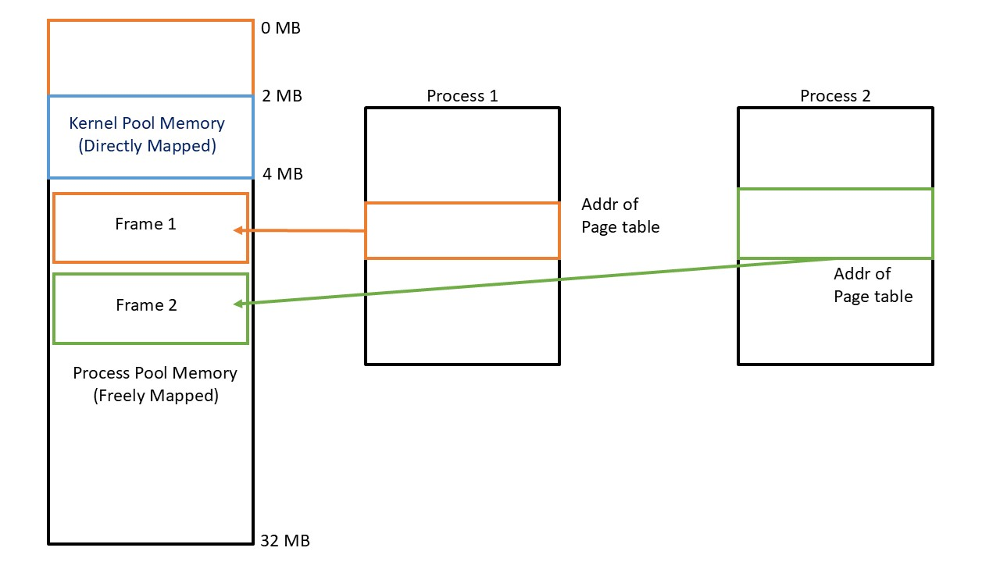
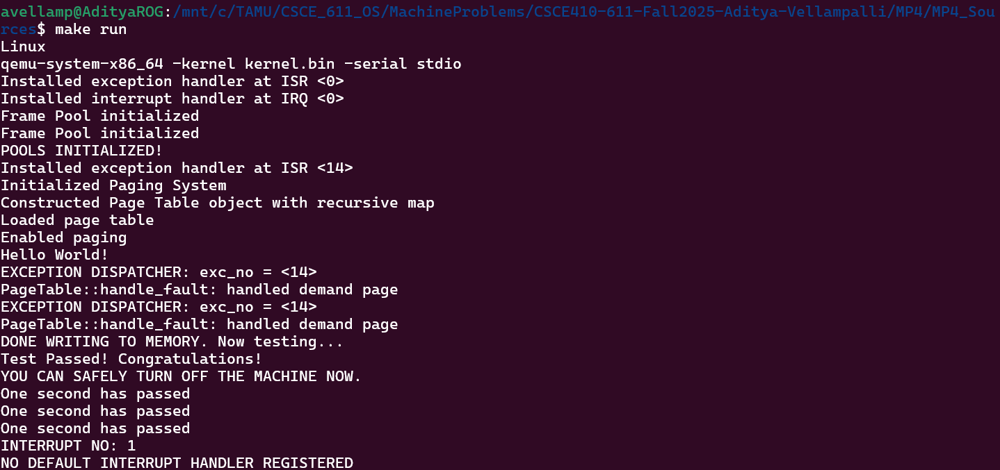
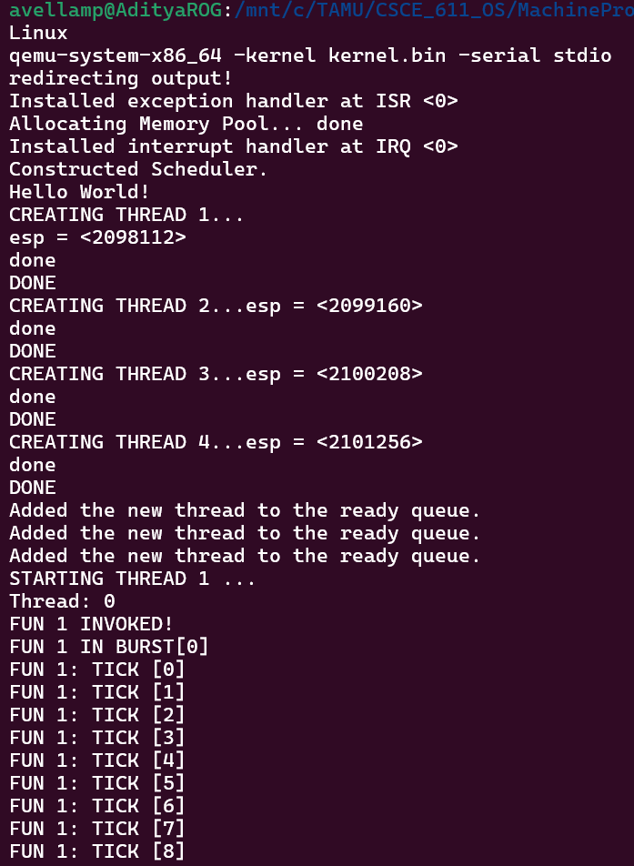
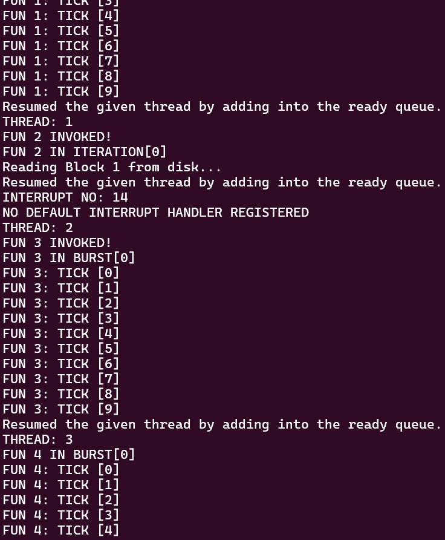
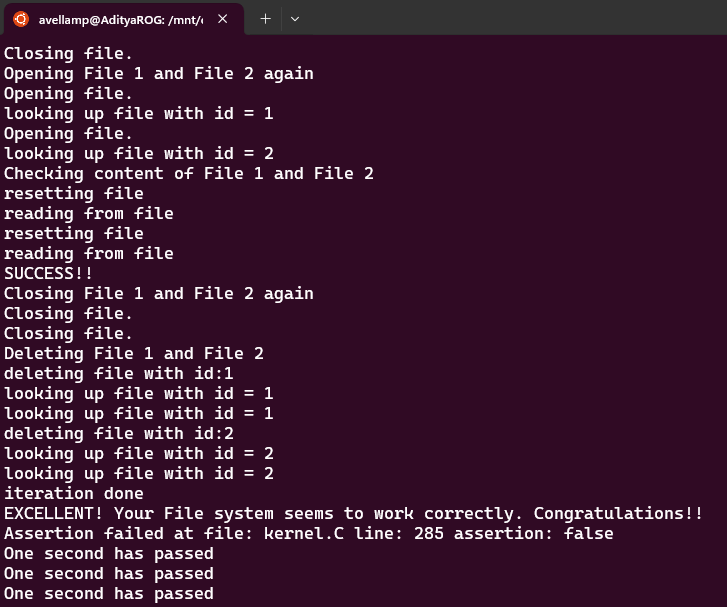

Introduction
This project is seven machine problems that add up to one operating-system kernel. Reading separately will make each one looks like an isolated topic - "implement a frame allocator," "implement a scheduler," "implement a file system." But, in a bigger picture, it holds a single argument: a kernel with 32 MB of physical memory and no infrastructure at all cannot safely run more than one thing, cannot protect itself from bad addresses, cannot keep the CPU busy while a disk seeks, and cannot save anything persistently. Every lab below tries to solve issues on what the previous lab exposed.
The rest of this page will explain each one section about what it is, what specific problem it solves, and why solving that problem immediately creates the next problem.
1. Why the kernel has to own its physical memory first
What problem exists before any code is written
The machine has 32 MB of RAM. RAM is not one big undivided pool you can hand out however you like - it is carved, in this kernel, into 4 KB chunks called frames. Before the kernel can do anything else - build page tables, start threads, load a file - it needs an answer to one very unglamorous question: which frames are currently free? Without an answer, two unrelated parts of the kernel could be handed the same frame and silently corrupt each other's data. There is no way to build anything more sophisticated on top of memory that nobody is tracking.
What ContFramePool is, and what it solves
I implemented ContFramePool as that bookkeeper. It divides the 32 MB machine into two separately-managed regions - a kernel pool (2–4 MB, used for the kernel's own data structures) and a process pool (everything above 4 MB, used for everything else) - and for every frame in a pool it records one of four states: free, the first frame of an allocation, a continuation frame of a multi-frame allocation, or permanently off-limits. get_frames() scans for a run of free frames and returns the number of the first one; release_frames() takes that same number, works out which pool owns it, and frees the whole run. mark_inaccessible() exists because real hardware has holes in it - the note in the handout about the 15–16 MB region that may not be safe to use - so a pool needs a way to permanently blacklist part of itself.
One detail matters more than it looks: the bookkeeping data (the bitmap of frame states) has to live somewhere physical too, and it is too big for the stack. It can be stored inside the pool it describes (internal) or inside a different pool entirely (external) - which is why the process pool's metadata is deliberately stored in kernel-pool frames instead of its own. That distinction is not a stylistic choice; it becomes necessary the moment paging is turned on, which is exactly the next section.
Why this alone is not enough
The frame allocator solves "who owns which physical memory," but everything built on top of it still speaks in raw physical addresses. That has three consequences, all bad: any piece of code can address any physical frame, including ones it has no business touching; a program cannot be given a clean, contiguous-looking address range if the physical frames it actually gets are scattered; and there is no way, later, to give two different programs their own private view of memory while sharing the same physical RAM. Physical addressing is a bookkeeping win and a protection dead end. The fix is to stop letting anyone touch physical addresses directly, and route every memory access through a translation step - which is what paging is for.
2. Why we need virtual addresses at all, and how page tables provide them
What problem virtual memory solves
Physical RAM is a scarce, shared, fragmented resource: 32 MB total, cut into pools, with holes marked off-limits, and no guarantee that the frames free for a given allocation are next to each other. A program, on the other hand, wants to think in a simple contiguous space and should never be able to reach outside the parts of memory it was actually given. Virtual memory is the layer that resolves this conflict: every address the CPU executes is a logical (virtual) address, and hardware - not software running per-access - translates it to whatever physical frame is actually backing it. This buys two things at once: a program's memory can look contiguous even when the underlying frames are not, and an address that was never allocated to a program simply has no translation, so touching it faults instead of corrupting something else.
How the x86 page table does the translation
The mechanism is a two-level table: a page directory whose entries each point to a page table, whose entries each point to a physical frame. The top 10 bits of a 32-bit virtual address select a page-directory entry, the next 10 bits select a page-table entry within that table, and the final 12 bits are the byte offset inside the resulting 4 KB frame. The kernel builds this structure, stores the page directory's physical address in the CR3 register, and flips a bit in CR0 - from that instruction onward, every memory access the CPU makes is translated through whatever CR3 currently points to.
There is a bootstrapping problem hiding here: the very code that sets up and enables translation has to keep running correctly the instant translation turns on. The fix is to identity-map the first 4 MB - logical address 0x01000 is deliberately mapped to physical address 0x01000, and so on - so the kernel's own code, stack, and data don't move out from under it when paging is switched on. Only memory above 4 MB is "freely mapped," i.e. mapped to whatever physical frame the frame allocator happened to hand out.
Why mapping is done on demand, not up front
A process can address up to 4 GB, but no program needs that much physical memory, and pre-mapping every possible page would waste enormous amounts of RAM before a single byte is used. So pages above 4 MB start out not present. The first time an instruction touches one, the CPU raises a page fault (interrupt 14), the faulting address is available in CR2, and the fault handler does the actual allocation at that moment: ask the frame allocator (previous section) for a frame, install it in the page table, mark the page present, and let the CPU retry the instruction. This is why the two subsystems are dependent rather than parallel - the fault handler is a customer of the frame allocator, not a replacement for it.
Why this alone is not enough
Demand paging creates a new ambiguity that didn't exist when everything was pre-mapped: a page fault on a not-present address can now mean two completely different things. It might be the first legitimate touch of memory the program is supposed to have - in which case the fault handler should quietly allocate a frame and move on. Or it might be a genuine bug - a wild pointer, an out-of-bounds access - in which case silently mapping it would hide the error instead of catching it. The page table by itself has no way to tell these apart; it only knows "present" or "not present," not "supposed to exist eventually" versus "never should exist." Something else has to track which virtual regions were actually requested, so the fault handler has a way to check legitimacy before it materializes a frame.
3. Telling a real allocation apart from a bad pointer
What VMPool is
VMPool is a lazy, page-granular allocator for virtual addresses. Calling allocate() does not touch physical memory at all - it just records, in a small table, that a given range of virtual addresses now belongs to the caller. Calling is_legitimate(address) answers exactly the question paging alone couldn't: is this address inside a region someone actually asked for? The page table keeps a list of every registered pool, and when a fault happens on a not-present page, it asks each pool that question before doing anything else. Only if some pool says yes does the fault handler proceed to grab a frame and complete the mapping the way the previous section described; otherwise the access is treated as an error.
Releasing memory runs the same idea backward: the pool identifies which of its pages held the released region, tells the page table to invalidate those specific mappings and return the frames to the allocator, and - because the CPU's translation cache (the TLB) does not automatically notice page-table edits - the kernel reloads CR3 to flush it. Skipping that flush is a classic bug: the CPU would keep using a stale, freed mapping and fail in a way that looks unrelated to memory management at all.
Why this alone is not enough
At this point the address-space machinery is logically complete, but it has a scaling limit baked into how it was built. The page directory and page-table pages themselves have to live somewhere in physical memory, and the simplest place to put them was the small identity-mapped region below 4 MB, because there physical and virtual addresses are the same number and no translation is needed to edit them. That convenience is also the ceiling: the identity-mapped region is tiny, and every additional address space or every additional chunk of virtual memory needs more page-table pages. To go further, those pages need to move into ordinary mapped memory above 4 MB - but that immediately creates a chicken-and-egg problem: the kernel needs a virtual address to edit a page table, yet the page table is the very thing that defines what virtual addresses mean.
4. Letting page tables manage themselves, so they can grow
What the recursive mapping trick is
The fix is to make the page directory point to itself: the very last entry of the page directory is set up so that its "page table" is the page directory itself. The CPU doesn't know this is a trick - it walks the structure exactly as it always does. But because the MMU is fooled into treating the directory as an ordinary page table (and, at one more level of indirection, treating any page table as an ordinary data page), a small set of carefully chosen fixed virtual addresses now always resolve to "the page directory" or "the page-table page for address X," no matter where those pages physically live. That gives the kernel a predictable virtual address for any page-directory or page-table entry it needs to edit, using the same translation mechanism the tables themselves define - without maintaining a second, parallel bookkeeping structure just to find them.
Address layout0xFFFFF000 + (directory_index * 4) -> page-directory entry
0xFFC00000 + (directory_index * 4096)
+ (table_index * 4) -> page-table entryThe diagram below shows why moving paging structures matters. The small directly mapped kernel pool remains available for core kernel data, while page-table frames for separate address spaces can come from the much larger freely mapped process pool.

What this unlocks
With this trick in place, page-directory and page-table frames can be pulled from the large process pool instead of the cramped kernel pool, so the amount of virtual memory the kernel can manage is no longer bottlenecked by a 2 MB identity-mapped region. This is what makes the earlier sections - frame allocation, demand paging, VM-pool validation - actually usable at any meaningful scale instead of just as a proof of concept.
The QEMU run below verifies the combined path. The kernel initializes both frame pools, constructs a recursively mapped page table, enables paging, handles demand-page faults, writes through the new mappings, and reaches the final passing check.

Why this alone is not enough
Everything up to this point solves one problem: giving a single flow of execution a safe, scalable, protected view of memory. But a kernel that can only ever run one thing at a time from start to finish is not very useful. The moment memory management can hand out independent stacks and independent address ranges reliably, the natural next question is: can more than one independent computation run using that memory? The early, primitive answer - have each routine explicitly call the next one by name when it's willing to give up the CPU - technically works, but it means every routine has to know about every other routine, and it collapses the instant a third, fourth, or blocked routine is added. That coupling is exactly what a scheduler removes.
5. From routines calling each other by name to a real scheduler
What problem a scheduler solves
Without a scheduler, "multithreading" means fun1() hard-codes a call to dispatch fun2(), which hard-codes a call back to fun1(). Adding a third thread means going back and editing both of the existing ones. No thread can simply say "I'm done for now" without knowing exactly who should run next, and nothing handles a thread that doesn't want to run at all (because it's waiting on something) or one that wants to stop entirely. A scheduler replaces all of that direct coordination with one neutral, third-party decision-maker.
What the FIFO scheduler does
The scheduler owns a ready queue - a plain FIFO list of threads waiting for the CPU - while Thread::dispatch_to() stays responsible only for the mechanical part: saving the current thread's register state and stack pointer, and restoring another thread's. A running thread calls yield() to voluntarily give up the CPU; the scheduler pulls the thread at the head of the queue and dispatches to it. New threads become schedulable through add(); threads that were waiting on something become runnable again through resume(), which puts them back at the tail of the queue.
- Create and admit
A new thread gets its entry function and its own stack, then enters the ready queue via
add(). - Yield the processor
The running thread calls
yield(); the scheduler picks the queue head and cycles other runnable work fairly. - Switch context
dispatch_to()saves the outgoing thread's state and restores the incoming thread's, which then continues from wherever it last left off. - Terminate safely
A thread whose function returns cannot free the stack it is still standing on, so cleanup is deferred until another thread can safely reclaim its resources.
That last point is a real problem, not a footnote: a thread cannot deallocate the memory it is currently executing on top of. The practical answer is the same one many real kernels use - park the finished thread somewhere (a "zombie" state) and let a different execution context perform the actual cleanup later.
The scheduler trace shows the ready queue in operation. Four threads are created and admitted, then the first thread begins its burst while later context switches rotate execution through the remaining queue.

Why this alone is not enough
A working scheduler means the kernel finally has more than one piece of runnable work in flight, and CPU time is now a resource worth protecting. That exposes an existing waste that didn't matter before: the disk driver's wait loop polls the hardware in a tight busy-loop until the disk is ready, holding the entire CPU hostage for however long a mechanical disk operation takes. With only one thread ever running, that was merely slow. With a ready queue full of other runnable threads, it is a bottleneck the scheduler was specifically built to prevent - so the scheduler's first real job is fixing the disk driver.
6. Turning a busy-waiting disk into one that yields
What problem the non-blocking disk solves
The provided SimpleDisk driver issues a programmed-I/O ATA request and then calls wait_while_busy(), which is implemented as while (is_busy()) {} - a pure busy loop. The disk head has to physically move and the transfer has to be set up before data is ready, and during all of that the CPU does nothing but poll a status bit. That's acceptable with a single thread and nothing else to do; it's unacceptable the moment other threads exist and could be making progress instead.
What NonBlockingDisk does differently
NonBlockingDisk is derived from SimpleDisk and overrides exactly the wait behavior: instead of spinning, the calling thread yields the CPU back to the scheduler and rechecks the device's status the next time it gets scheduled. From the caller's point of view, read() and write() still look like ordinary synchronous calls - the API doesn't change - but the CPU is no longer wasted while the hardware catches up. This is precisely why the scheduler had to exist first: yielding is meaningless if there is no ready queue and no other thread for the CPU to run in the meantime.
The trace makes that interaction visible. Thread 2 starts a block read, returns control through the ready queue while the device is unavailable, and Thread 3 runs instead of leaving the processor inside a polling loop.

Why this alone is not enough
A non-blocking disk driver makes block transfers cheap to perform, but a "block" is still just an anonymous 512-byte slot identified by a number. It has no name, no owner, no recorded length, and nothing tracking which blocks are free versus in use. Reading and writing raw blocks efficiently is necessary but not sufficient for anything a program would recognize as a "file." The last layer turns that raw block interface into named, persistent storage.
7. Turning disk blocks into files
What problem the file system solves
Even with a working, non-blocking disk driver, "storage" so far means "block number 17." Nothing tracks which blocks belong together, which blocks are free, how long a file is, or what a caller should call it. The file system is the layer that adds identity (a file has a name - here, just an integer id), allocation (which blocks a file owns), and free-space management (which blocks are available for the next file) on top of the raw block interface.
How the three classes divide the work
FileSystem owns the disk-wide bookkeeping: Format() initializes a fresh, empty file system on a disk of a given size; Mount() reconnects an in-memory FileSystem object to metadata that already exists on disk; CreateFile() and DeleteFile() allocate or reclaim a block and an inode. Inode is the record that ties a file's id and length to the single data block it owns - the inode list doubles as the directory, since this file system deliberately has no separate directory structure. File handles everything about using an already-open file: it keeps a 512-byte cache of the file's one block plus a current cursor position, and it translates the caller's byte-oriented Read()/Write() calls into reads and writes of that cached block, taking care never to read or write past the file's recorded length or the one-block maximum size.
Format and mount
Initialize persistent metadata, then reconnect the in-memory file-system object to an existing disk image.
Inode table
Doubles as a single-level directory: file id, length, and its one data block, all in one place.
Free-block map
A simple bitmap-style array on disk, so create and delete can allocate and reclaim blocks.
Sequential access
A per-open-file cursor and cache turn byte-level reads and writes into block operations.
Limiting every file to a single 512-byte block is a deliberate simplification, not a shortcut around the hard part: it removes multi-block allocation bookkeeping while still exercising the entire persistence path end to end - formatting writes empty inode and free-block metadata, mounting reads it back, creating a file reserves an inode and a block, closing writes the cache back to disk, reopening recovers the exact bytes, and deleting returns the block to the free list.
This closes the loop the whole project has been building toward: a file operation issued at the very top of the kernel now travels down through the file system into a block request, through the non-blocking disk driver (which can yield the CPU without stalling the system), through the scheduler (which has other threads ready to run in the meantime), and - for the in-memory pieces along the way - through the paging and frame-allocation machinery that made it possible to hand out that memory safely in the first place.
The final test creates two files, closes and reopens them, reads their contents back, deletes both files, and confirms that the complete file-system exercise succeeds.

Validation strategy
Validation followed the same dependency order as implementation. Each layer was tested at its public boundary before the next subsystem was allowed to rely on it, so a later failure could be traced through a chain of already-verified contracts rather than debugged as one monolithic kernel.
- Frame allocation: allocate and release single and contiguous runs, preserve inaccessible regions, and verify internal versus external metadata placement.
- Paging: enable translation, trigger first-touch faults above 4 MB, create missing mappings, reject addresses outside registered pools, and verify page release.
- Virtual allocation: reserve multiple page-aligned regions, materialize them lazily, and return mapped frames when regions are released.
- Scheduling: run four kernel threads through repeated FIFO yields and verify safe completion of terminating thread functions.
- Disk I/O: perform block reads and writes while confirming that a waiting thread yields processor time to other ready work.
- File system: format and mount a 128 KB volume; create two files, write distinct strings, close and reopen them, verify their contents, and delete them without assertion failures.
Useful links
Explore the implementation
Browse the complete source code for the x86 kernel project on GitHub.
View project on GitHub ↗